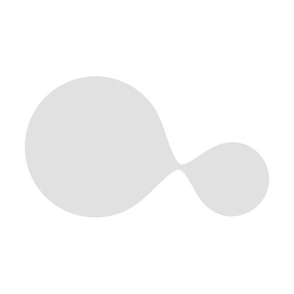

Gradient
Black · Solid

Ghost · Watermark
Isotipo — dos círculos unidos por puente cóncavo. Gradiente direccional: masa roja a la izquierda, chico ámbar a la derecha. Nunca recortar ni invertir la dirección del gradiente.